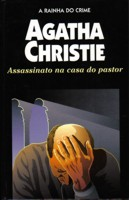

Assassinato na Casa do Pastor
Murder at the Vicarage
“Qualquer pessoa que matasse o coronel Protheroe estaria prestando um grande serviço ao mundo”. Pronunciadas incidentalmente pelo pastor Clement, estas palavras, para surpresa de todos, logo viriam a se tornar realidade: o coronel é encontrado assassinado... na casa do próprio pastor. Mas para a sorte de Clement e azar do verdadeiro culpado, entra em cena a simpática velhinha Miss Jane Marple. Com apenas duas armas — um conhecimento profundo da natureza humana e um formidável poder de observação — ela descobre a verdadeira identidade do assassino, surpreendendo os moradores da pequena St. Mary Mead.